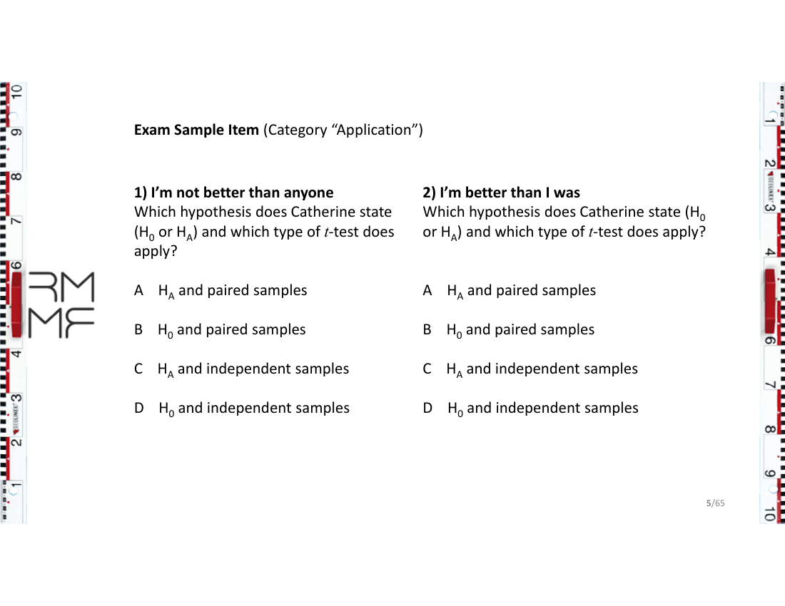
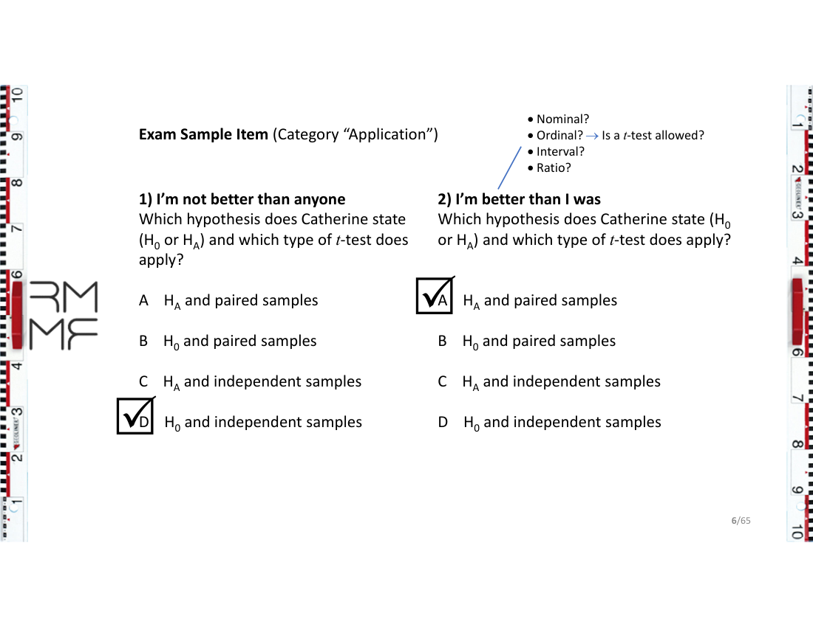
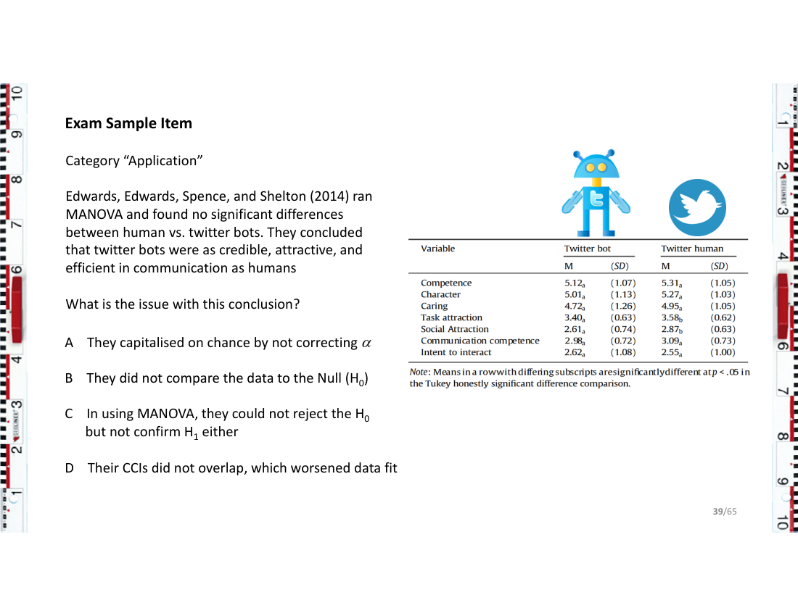

L11-E01 / Application / 选择题
与别人比，还是与过去的自己比？ 
11 Σ SD5979 Bayesian statistics 2026 11 11.pdf · PDF 第 5 页 · 点击放大 题干中文辅助（原译文） 1) 我不比任何人更好
我的作答 加入错题
查看老师答案与逐项解释 / 来源 老师答案 1:D / 2:A 以原页勾选为准
以下为依据课件整理的逐项解释。未被选中不等于概念从未讲过；“无题设依据”也不等于全课未出现。
这些选项的概念，课件正文是否出现过？ 检索全部 903 页，排除已收录题目、答案页和可识别的样题 / 参考文献页。下列为按原词检索的出现记录，可能包含变体遗漏；出现不代表定义正确，也不代表考试重点。错项判定仍以逐项解释和老师答案为准。
independent samples 正文原词命中 6 页
老师原答案与题目延续 
11 Σ SD5979 Bayesian statistics 2026 11 11.pdf · PDF 第 6 页 · 点击放大 L11-E02 / Application / 选择题
不显著，能说一样好吗？ 
11 Σ SD5979 Bayesian statistics 2026 11 11.pdf · PDF 第 39 页 · 点击放大 题干中文辅助（原译文） 考试样题
我的作答 A B C D 加入错题
查看老师答案与逐项解释 / 来源 老师答案 C 以原页勾选为准
以下为依据课件整理的逐项解释。未被选中不等于概念从未讲过；“无题设依据”也不等于全课未出现。
这些选项的概念，课件正文是否出现过？ 检索全部 903 页，排除已收录题目、答案页和可识别的样题 / 参考文献页。下列为按原词检索的出现记录，可能包含变体遗漏；出现不代表定义正确，也不代表考试重点。错项判定仍以逐项解释和老师答案为准。
老师原答案与题目延续 11 Σ SD5979 Bayesian statistics 2026 11 11.pdf · PDF 第 40 页 · 点击放大 L11-E03 / Insight / 开放题
56%：有多确定？ 11 Σ SD5979 Bayesian statistics 2026 11 11.pdf · PDF 第 57 页 · 点击放大 题干中文辅助（原译文） 假设用朴素贝叶斯估计，用户仅依据眼睛就认定一个机器人是仿人的概率为 56%：P(Humanoid|eyes) = 0.56
我的作答 加入错题
查看老师答案与逐项解释 / 来源 56% 意味着什么？ 56% 接近 50–50 的最大不确定位置，因此“Humanoid”的决定仍很可疑；不能把 56% 直接说成很有把握。
两个端点作对比 P = 0% 或 100% 时，老师图中不确定性为零。
以上短答是课件内容的中文整理；每一小问分别对应上面的证据页。原答案 / 延续页见下方。
老师原答案与题目延续 11 Σ SD5979 Bayesian statistics 2026 11 11.pdf · PDF 第 58 页 · 点击放大